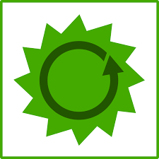
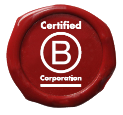

What Is B Lab?
Author: Michelle Lagos CEO
B Lab is a non-profit corporation that certifies B Corporations—it offers a variety of support, varying from access to the Certified B Corp logo to introducing new Certified B companies to a large, lively community of other Certified B Corporations. With the primary goal globally is to “Make Business a Force For Good.”
BCorp Mission Video

What Is a B Corporation?
“B Corp is legally required meet the highest levels of standards for social and environmental performance .”
A Certified B Corp is a for-profit corporation that has been certified by B Lab, which is a non-profit company that measures a company’s social and environmental performance against the standards in the Online B Impact Assessment. Measuring a company’s entire social and environmental impact.
There are over 4,000 Certified B Corps in 77 countries across 153 different industries.
B Lab’s goal is to build “a global community of Certified B Corporations who meet the highest standards of verified, overall social and environmental performance, public transparency and legal accountability.”
A Certified B Corporation is a company that has passed B Lab’s certification process, which involves assessing and possibly changing some of its methods in regard to social and environmental performances (i.e., how it treats its employees and how it treats its garbage).
There are five significant conditions to becoming a Certified B Corporation. Although some of these conditions overlap with Benefit Corporations, Certified B Corporations and Benefit Corporations are not the same thing).
According to B Lab, the five conditions that define a Certified B Corporation are:
- Accountability:
- Directors are mandated to consider the company’s impact on all shareholders
- Transparency:
- Certified B Corporations must publish and make public a report of their social and environmental performance; this report is assessed by a neutral, third-party standard.
- Performance:
- Corporations much attain a minimum score on the B Impact Assessment test & re-certify every two years
- Availability:
- Any business can become a Certified B Corporation, no matter what type of business entity it is or in which country/state it is incorporated
- Cost:
- Certification fees vary, based on revenues

Different types of companies require different types of certification. The four categories are:
- Start-ups
- Multinationals and public companies
- Companies with related entities
- International certification
How Are Companies Assessed by B Lab?
The Assessment asks questions to help corporate leaders understand how—and why—“to build a better business—better for your workers, community and the environment.”
You can measure your company’s social and environmental impact on your own, using B Lab’s free, confidential B Impact Assessment.
Why Use B Corp’s Impact Assessment?
Thirty minutes can give you a snapshot of your company’s impact, which includes a basic summary of which things your company excels at and which it could improve upon. 2 – 3 hours gives you a full impact report, which includes a holistic report on how your company scores on a single impact topic.
Within the B Impact Assessment, you can also access improvement tools, best practices guides and case studies as well as create a customized plan for your company’s improvement. Standards and benchmarks can help you reach your improvement goal.
Why Assess Your Company and Why Change?
-
Earn Trust
-
Attract & engage the employees, clients, and alliances that are in alignment
-
Earn Press
-
Be clear about your intention(s)
-
Gain a competitive advantage
If you doubt that one company—yours—can make a difference in the world yet still make a profit, consider this: according to the comprehensive study entitled Sustainability Pays: Studies That Prove the Business Case for Sustainability, “businesses can improve short-and long-term profitability through the adoption of sustainable practices […].”
If you don’t believe that people pay attention to or care about the sustainability issues of the corporations they work at, work with or buy from, you’re wrong.
According to Harvard Business Review, millennials, who represent about 50% of the global workforce, seek work that connects them to a larger purpose. The Impact Assessment is designed for any type of for-profit company and any size of for-profit company.
The questions posed on the Impact Assessment will be tailored to the number of employees you indicate, so owners of a small business can take the Impact Assessment as well. The Impact Assessment “comprehensively covers the impact of a businesses on all of its stakeholders, including its workers, suppliers, community and the environment.
The Assessment also captures best practices regarding mission, measurement and governance.” The most heavily-weighted part of the Assessment deals with each company’s specific business model.
Since the Impact Assessment measures current and previous business performance rather than planned intentions, start-ups tend to utilize it only as a learning tool—since they haven’t yet existed long enough to measure their impact, start-ups can instead weave the appropriate practices into their companies for future success.
Why Become a B Corp?
- Your company can make a short-term and long-term positive impact with clear intention(s)
- Your company can help lead a movement with other companies and organizations nationally/internationally
- Your company can attract Alliances and Investors because of your complete transparency
- Your company can generate Press
- Your company can attract and engage likeminded talent
The B Corp Declaration:
As B Corporations and leaders of this emerging economy, we believe:
- That we must be the change we seek in the world.
- That all business ought to be conducted as if people and place mattered.
- That, through their products, practices and profits, businesses should aspire to do no harm and benefit all.
- To do so requires that we act with the understanding that we are each dependent upon another and thus responsible for each other and future generations.
